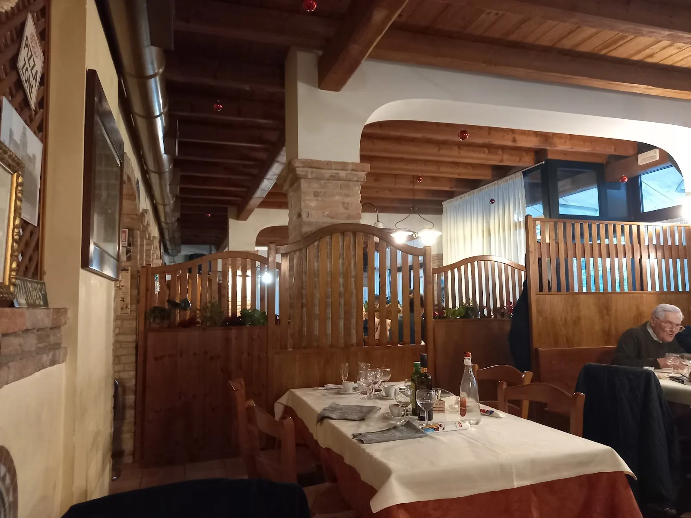
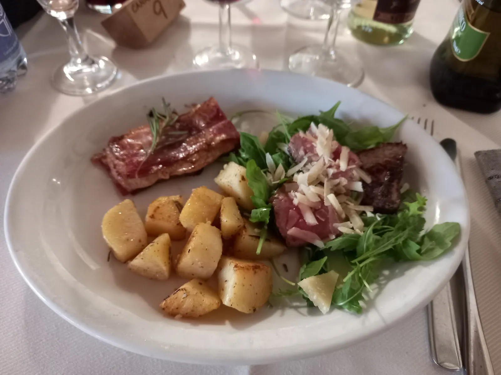
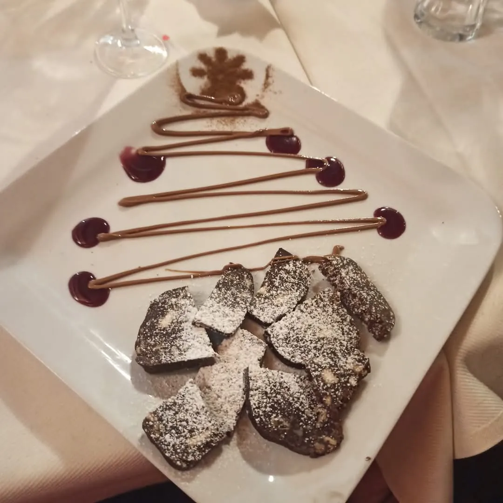
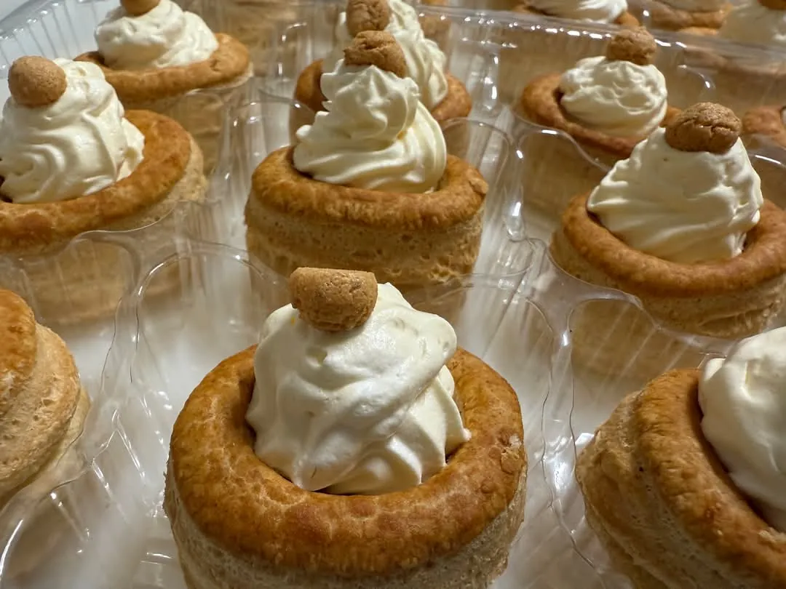

Si mangia, si brinda, si resta.
Cucina veneta e di casa a pranzo e a cena: bolliti, gnocchi, sarde in saor e un menù del giorno che cambia.
- Bolliti
- Gnocchi al ragù d'anatra
- Sarde in saor
A pranzo e a cena, a Rovarè di San Biagio di Callalta, nella campagna trevigiana. Cucina di casa, pizza e camere per chi vuole fermarsi.




Cucina veneta e di casa a pranzo e a cena: bolliti, gnocchi, sarde in saor e un menù del giorno che cambia.
Pizze dal forno, dalla diavola alla gorgonzola. Disponibile anche il servizio d'asporto.
Camere con giardino, terrazza e parcheggio privato gratuito, e la colazione al mattino. Telefono +39 0422 797 499.
Tre anime, un’unica casa
Cucina veneta e di casa a pranzo e a cena: bolliti, gnocchi, sarde in saor e un menù del giorno che cambia.
Pizze dal forno, dalla diavola alla gorgonzola. Disponibile anche il servizio d’asporto.
Camere con giardino, terrazza e parcheggio privato gratuito, e la colazione al mattino.
Dalla cucina e dal forno
Piatti segnalati nel menù del giorno e dagli ospiti sulle guide online. La carta completa e i prezzi si chiedono in sala.
Primi, secondi e dolci
Dal forno, anche da asporto
La locanda, la sala e la cucina
Photos: from Locanda Canareggio's public Google Maps listing, used for this private preview.
La locanda
Dopo cena, si sale in camera. La locanda ha camere per coppie e famiglie, con colazione, giardino e terrazza.
Dove siamo
About this preview. Built by GunaFix from Locanda Canareggio’s own website; the emblem belongs to Locanda Canareggio. Photos: from Locanda Canareggio's public Google Maps listing, used for this private preview.
Da Google Maps
“Had dinner here. The service was Amazing and everyone was so welcoming. The food was so fresh and full of flavour, absolutely amazing. Can't wait to go back. Great value for money. A must place to visit.”
“We came in late and our order went through and was made from the bottom.”
“Very comfort and clean room , the heat was super , the host was very kind and the food was from the best i ever taste in Italy!|Congratulations!!!!”
“The staff are so helpful and friendly. The rooms and food are very good value for money. I booked the whole place for my wedding and all my guests praised this place. The restaurant is the best in the area.”
“It's a small B&B-style hotel over a Trattoria Pizzeria Canareggio. Very modern rooms evidently redone totally in the last year or two. The room was adequately large, not spacious but adequate and there was a third bed which obviously took ...”
Citazioni letterali dalla scheda Google Maps pubblica del ristorante.